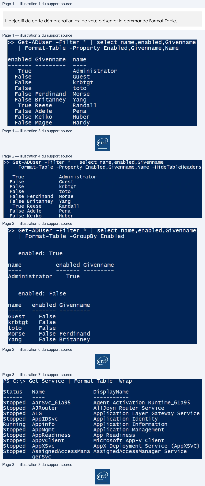

Transcription du document du Drive TSSR. La mise en forme est adaptée au Web ; les compléments IA du portail sont présentés séparément.
Initiation au Scripting avec PowerShell
Démonstration 06 du module 3
L’objectif de cette démonstration est de vous présenter la commande Format-Table.
Lorsque les objets sont correctement sélectionnés, triés et conditionnés, il est utile de les exporter
dans un format adapté à un tableur par exemple.
Pour cela, il va falloir mettre sous forme de tableaux les objets obtenus ainsi que leurs propriétés.
La commande Format-Table permet d’organiser les colonnes et les valeurs de nos objets.
• Placé en fin de ligne de commande, le Format-Table travaille à partir des propriétés.
• Il s’accompagne pratiquement tout le temps d’un Select-Object
La commande place les en-têtes de colonne dans l’ordre indiqué au paramètre Property.
Le paramètre HidetableHeaders masque les en-têtes de colonnes pour ne laisser que les valeurs.
Page 1/3
© ENI – Tous droits réservés
>> Get-ADUser -Filter
*
|
select name,enabled,Givenname
|
Format-Table
-Property Enabled,Givenname,Name
enabled Givenname
name
True
Administrator
False
Guest
False
krbtgt
False
toto
False
Ferdinand
Morse
False Britanney
Yang
True Reese
Randal1
False Adele
Pena
False
Keiko
Huber
False
Magee
Hard
Initiation au Scripting avec PowerShell
Le paramètre Groupby permet de regrouper des objets selon la valeur d’une propriété.
On retrouve les utilisateurs actifs et les inactifs.
Le paramètre Wrap va forcer le retour à la ligne dans le cas où la valeur d’une propriété serait trop longue pour l’affichage.
Page 2/3
© ENI – Tous droits réservés
>> Get-ADUser
-Filter
*
select name,enabled,Givenname
|
Format-Table -Property Enabled,Givenname,Name
-HideTableHeaders
True
Administrator
False
Guest
False
krbtgt
False
toto
False
Ferdinand
Morse
False Britanney
Yang
True
Reese
Randall
False Adele
Pena
False Keiko
Huber
>> Get-ADUser -Filter
*
|
select name,enabled,Givenname
|
Format-Table
-GroupBy Enabled
enabled:
True
name
enabled Givenname
Administrator
True
enabled:
False
name
enabled Givenname
Guest
False
krbtgt
False
toto
False
|
Morse
False
Ferdinand
Yang
False Britanney
@
Initiation au Scripting avec PowerShell
Page 3/3
© ENI – Tous droits réservés
PS C:\> Get-Service
Format-Table
-Wrap
Status
Name
Disp layName
Stopped
AarSvc_61a95
Agent Activation Runtime_61a95
Stopped
AJRouter
Alljoyn Router Service
Stopped
ALG
Application
Layer Gateway Service
Stopped
App IDSvc
Application Identity
Running
Appinfo
Application
Information
Stopped
AppMgmt
Application Management
Stopped
AppReadiness
App Readiness
Stopped
Appvclient
Microsoft App-V Client
Stopped
AppXSvc
AppX Deployment Service
(AppXSVC)
Stopped
AssignedAccessMana AssignedAccessManager
Service
gerSvc
